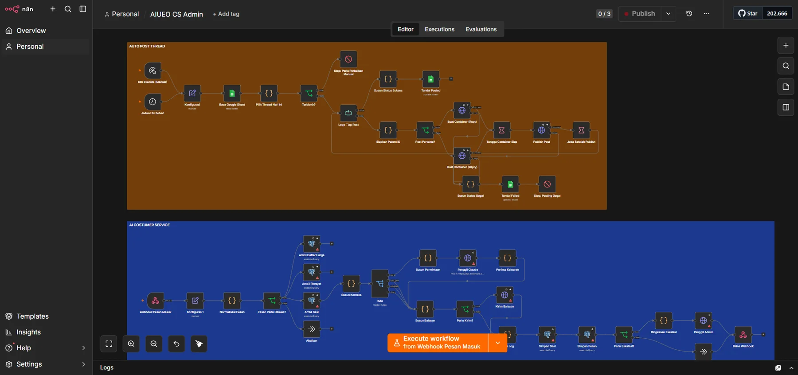

01 AI automation engineering
AI Customer Service & Social Media Pipeline
n8n workflows covering a shift nobody has to work. One reads the client’s history and price list, drafts a reply through Claude, and escalates to a human when the request stops being routine. The other publishes the day’s social posts from a sheet and logs each result back.
Pipelines built
Support agentEscalation routingPost schedulerRun logging
